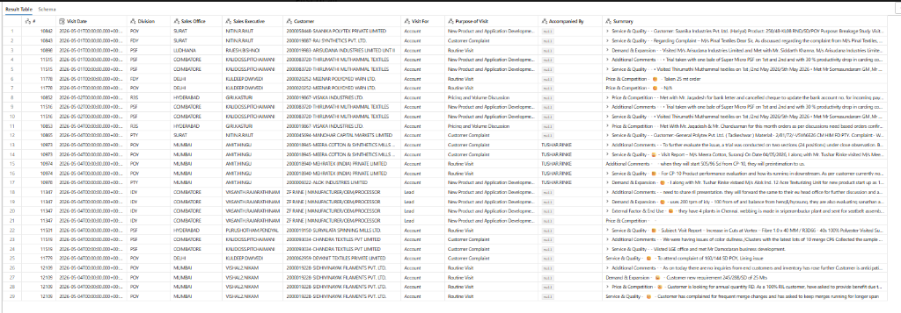
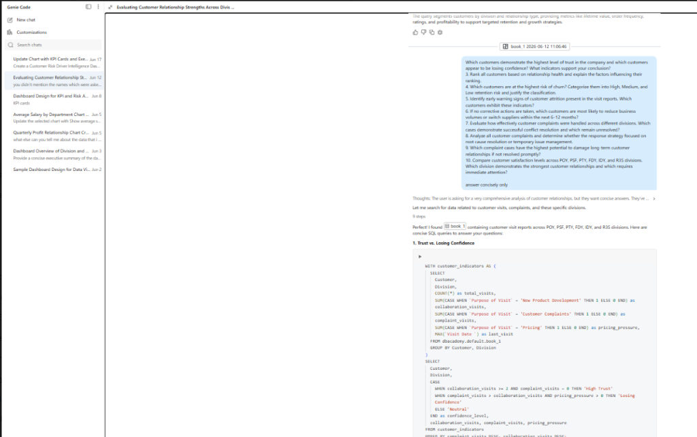
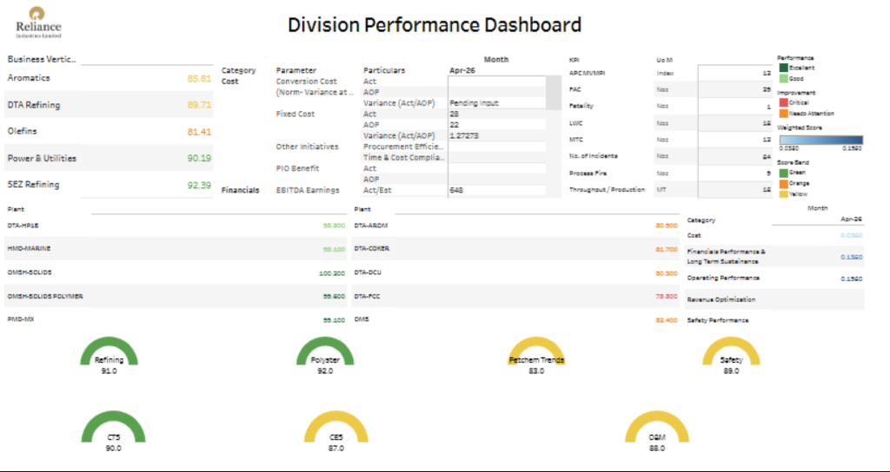

Summer Internship Project Review
AI-Assisted Business Intelligence & Executive Dashboard Development
Petrochemicals IT Division — Structured evaluation of Enterprise AI Assistants & Interactive Tableau Performance scorecards.
Slide 1: Title Slide
Good morning team and members of the PetChem IT department. I am Raunish Kathpalia, an MBA candidate from NIT Kurukshetra.
- Over the past eight weeks, from June 1st to July 24th, I had the privilege of interning with the PetChem IT division under the mentorship of Mr. Saurabh Shringarpure.
- This presentation details the two key projects completed during my internship: a structured business evaluation of AI assistants using customer visit logs, and the creation of an executive performance scorecard in Tableau.
- Let's start by looking at the overview of the internship objectives.
Internship Overview
Placement Context
Operating at the intersection of business strategy and IT, this internship was designed to transition from tools training into delivering enterprise analytical assets.
| Department | PetChem – IT |
| Role Focus | Business Intelligence |
| Key Platform | Databricks & Tableau |
Mastering query workflows within the Databricks environment to audit and manipulate unstructured tables.
Analyzing visit summaries to identify account trust levels and structural divisions in customer interactions.
Establishing a reproducible benchmark to compare LLM performance on unstructured customer queries.
Designing interactive worksheets and radial performance dials in Tableau to display plant metric health.
Slide 2: Internship Overview
This overview establishes the operational context. Placed within PetChem IT, my role bridged technical evaluation with business management.
- On the left, you see the profile details: the internship was focused on BI and performance evaluation.
- On the right are the four main objectives: gaining proficiency in Databricks, auditing visit reports, evaluating AI tools, and designing Tableau dashboard metrics.
- We structured the program so that each task naturally supported the next, forming a continuous workflow. Let's look at that timeline in the next slide.
Internship Journey
Slide 3: Internship Journey
This roadmap details the progression over the eight weeks.
- Weeks 1 and 2 focused on foundational platform training in Databricks.
- In Week 3, I audited and cleaned customer visit reports, which prepared the dataset for evaluation.
- Weeks 4 and 5 were dedicated to Project 1, creating identical test prompts and benchmarking the AI models.
- Weeks 6 and 7 were spent on Project 2, calculating metrics and designing Tableau worksheets.
- Finally, Week 8 was devoted to refining the dashboard and compiling this presentation. Let's look closer at Project 1.
Project 1 — AI Agent Evaluation
Evaluation Goal
Determine whether generative AI assistants can accurately analyze unstructured visit reports to extract relationship sentiment, identify account risks, and summarize division performance.

Presenter Contributions
- Schema Audit – Validated dataset structure and business mappings.
- Prompt Engineering – Designed standardized evaluation prompts.
- Run Execution – Conducted identical prompt testing.
- Analysis – Compared qualitative AI responses and documented findings.
Slide 4: Project 1 - AI Agent Evaluation
This slide introduces the first project, evaluating generative AI models for business support.
- The goal was to test how accurately these models could analyze unstructured text logs, like customer visit records, and extract business insights.
- In the center is a screenshot of the visit dataset from Databricks. It contains columns for Visit Date, Division, Customer, and Visit Summary.
- My contribution was auditing the dataset schema, designing the prompts, running the tests, and documenting the results.
- To ensure a fair test, we developed a standardized evaluation methodology, which is outlined next.
AI Evaluation Methodology
Ability to recognize specific RIL division names (POY, PSF, FDY) and identify product contexts in unstructured text.
Effectiveness in identifying accounts showing signs of attrition or price sensitivity in visit notes.
Ability to categorize customer feedback into levels of trust (High, Medium, Low) based on unstructured descriptions.
Structure, formatting, and professional tone of the generated reports, ensuring they are ready for management review.
Relevance and realism of the model's suggestions for resolving complaints or strengthening relationships.
All models were evaluated using identical prompts and standardized qualitative criteria to ensure a fair comparison.
Slide 5: AI Evaluation Methodology
This slide outlines the structured framework we used to evaluate model performance.
- To keep the test objective, we graded each model's output across five areas: Business Grasp, Churn Analysis, Relationship Tone, Reporting Quality, and the Actionability of recommendations.
- At the bottom is the four-step process: loading the data, running identical prompts, evaluating the outputs, and comparing findings qualitatively.
- Next, we will review the evaluation findings and look at how Databricks Genie performed during our tests.
Evaluation Results & Insights
Strengths: Provided clear business reasoning, identified customer attrition risks, and generated structured summaries suitable for management.
Strengths: Accurately translated natural language prompts into executable SQL queries, making it highly effective for ad-hoc database searches.
Strengths: Both models were effective for text summarization, but their recommendations were often generic and required editing.

Slide 6: Evaluation Results
This slide summarizes the evaluation results for each model.
- Claude 3.5 Sonnet proved most suitable for business reasoning and strategic analysis, generating reports that required very little editing.
- Databricks Genie proved highly effective for database exploration. On the right, the screenshot shows Genie translating our relationship evaluation prompt into SQL.
- ChatGPT and Gemini were useful for quick summaries, but their business recommendations were often too generic for management reviews.
- Now we will transition to Project 2, the design and development of the division performance dashboard.
Executive Dashboard Development
Audited and cleaned raw division performance data, verifying metrics against target business values.
Selected key operational metrics, including fixed cost variance, EBITDA, safety events, and plant efficiency index.
Created individual Tableau worksheets, designing custom radial performance dials and status trackers.
Assembled the worksheets into a single dashboard layout, organizing sections to present a clear division scorecard.
Cleaned the Division Scorecard dataset, designed worksheets, calculated target variances, and laid out the executive dashboard. (No database admin or server deployment tasks were claimed).
Slide 7: Executive Dashboard Development
This slide outlines the development of the division performance dashboard in Tableau.
- We followed a four-stage process: auditing the raw performance data, defining key operational metrics, building individual worksheets, and integrating them into a final dashboard layout.
- My work focused on cleaning the dataset, designing worksheets, calculating target variances, and laying out the dashboard.
- We will look at the completed dashboard next.
Final Executive Dashboard

Slide 8: Final Executive Dashboard
This is the completed Tableau dashboard, designed to give managers a quick overview of division health.
- In the top left, we track performance scores for core Business Verticals, like Aromatics and Refining.
- In the bottom left, the dashboard details individual Plant Scores.
- The center table compares actual costs and production metrics against targets.
- At the bottom, custom radial dials display performance scores for each division.
- Next, we will review the challenges encountered during the project and how they were resolved.
Challenges & Solutions
Challenge: Navigating a new data intelligence platform and executing complex SQL queries quickly.
Solution: Studied Databricks training resources and ran test queries on sample tables to confirm syntax.
Challenge: Comparing models objectively when their outputs vary in length, detail, and style.
Solution: Designed a standardized scorecard and structured prompts to ensure similar testing conditions.
Challenge: Working with incomplete fields in the Division Scorecard dataset.
Solution: Created computed columns in Tableau and used representative averages to fill empty fields while keeping business context.
Challenge: Building semi-circular performance dials, which are not supported natively in Tableau.
Solution: Calculated coordinates using trigonometric formulas to map dashboard values to radial gauges.
Slide 9: Challenges & Solutions
This slide reviews the technical challenges encountered and how they were resolved.
- To learn the Databricks ecosystem quickly, I studied official guides and practiced running queries on sample datasets.
- To compare the AI models fairly, we created a standardized scoring template.
- For Project 2, we handled missing data fields by calculating representative averages.
- Creating the radial dials in Tableau required calculating angles and coordinates manually, using trigonometric formulas.
- Next, we will review the outcomes and key learnings from the internship.
Outcomes & Key Learnings
- Developed skills in Databricks SQL querying and data validation.
- Learned Tableau design workflows and calculated fields.
- Gained experience in prompt engineering and evaluation templates.
- Learned how IT support aligns with PetChem operations.
- Understood how to select and define business KPIs.
- Practiced designing dashboard layouts optimized for executive review.
- Developed structured methods for evaluating software tools.
- Learned to prioritize business needs over software features.
- Improved my ability to explain data findings clearly to managers.
Slide 10: Outcomes & Key Learnings
This slide summarizes the technical, business, and professional outcomes of the internship.
- On the technical side, I gained experience in Databricks SQL querying and Tableau dashboard design.
- For business understanding, I learned how IT aligns with PetChem operations and how to select metrics that matter to managers.
- Professionally, the project taught me to design analytics with the end-user in mind, focusing on clarity.
- Ultimately, the deliverables provide a structured template for future AI evaluations and a clean performance dashboard.
- Let's conclude the presentation.
Summer Internship Project Review
Reliance Industries Limited — PetChem IT Division
Slide 11: Thank You
This concludes my presentation review.
- I would like to express my gratitude to my mentor, Mr. Saurabh Shringarpure, and the PetChem IT team for their guidance.
- I welcome any questions or feedback you may have about either of the projects. Thank you.